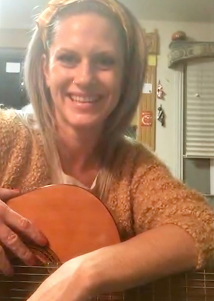

<!--<!DOCTYPE html>-->
<!--<html lang="en">-->
<!--<head>-->
<!--    <meta charset="UTF-8">-->
<!--    <meta name="viewport" content="width=device-width, initial-scale=1.0">-->
<!--    <title>Guitar Lessons in Fitchburg, WI | Iron Rose Guitar</title>-->
<!--    <meta name="description" content="🎸 Learn guitar in Fitchburg! Tailored lessons for teens & adults who want fun, not drills. Build confidence by playing YOUR favorite music.">-->
<!--    <meta name="keywords" content="guitar lessons, Fitchburg WI, in-person guitar lessons, adult guitar lessons, teen guitar lessons, Madison WI guitar">-->
<!--    <link rel="stylesheet" href="/css/global.css">-->
<!--    <link rel="stylesheet" href="/css/pages/home.css">-->
<!--    <script type="application/ld+json">-->
<!--        {-->
<!--            "@context": "https://schema.org",-->
<!--            "@type": "MusicTeacher",-->
<!--            "name": "Iron Rose Guitar",-->
<!--            "address": {-->
<!--                "@type": "PostalAddress",-->
<!--                "addressLocality": "Fitchburg",-->
<!--                "addressRegion": "WI"-->
<!--            },-->
<!--            "areaServed": ["Madison, WI", "Verona, WI", "Fitchburg, WI"],-->
<!--            "telephone": "+16086203679",-->
<!--            "url": "https://ironroseguitar.com/",-->
<!--            "sameAs": "https://maps.google.com/?cid=8478518634013434643"-->
<!--        }-->
<!--    </script>-->
<!--</head>-->
<!--<body>-->

<!--<header id="site-header" class="site-header"></header>-->

<!--<main>-->
<!--    <div class="bento-grid">-->

<!--        &lt;!&ndash; HERO SECTION &ndash;&gt;-->
<!--        <section class="card card-hero" style="grid-area: hero">-->
<!--            <div class="eyebrow">Unleash Your Rhythm.</div>-->
<!--            <h1>Learn guitar by playing the music you love!</h1>-->
<!--            <h2>Skip the tedious drills. Discover a creative escape that lets you play the music that moves you!</h2>-->
<!--            <p>Tailored specifically for your goals and schedule.</p>-->
<!--            <a href="/contact-web3forms.html" class="btn btn-primary">Book My Free Introductory Session</a>-->
<!--        </section>-->

<!--        &lt;!&ndash; FEATURE/BENEFITS SECTION &ndash;&gt;-->
<!--        <section class="card card-feature" style="grid-area: review">-->
<!--            <div class="eyebrow">No Experience? No Problem.</div>-->

<!--            <div class="hero-image-wrapper sunrise">-->
<!--                <div class="hero-image-cell">-->
<!--                    
<!--                         alt="A smiling blonde-haired woman student holding a guitar during a fun, beginner-friendly online guitar lesson."-->
<!--                         loading="lazy">-->
<!--                    <p class="bento-caption">"No rigid rules. No boring drills. Just the fun of playing your favorite songs from day one!"</p>-->
<!--                </div>-->
<!--            </div>-->
<!--            <h2>Real Progress Starts Here: Guitar Lessons for All Ages.</h2>-->

<!--            <div class="btn-lessons-wrapper">-->
<!--                <a href="/lessons.html#lesson-packages" class="btn btn-secondary">See Lesson Packages →</a>-->
<!--            </div>-->

<!--            <div class="feature-main">-->
<!--                <p><strong>Never Too Late:</strong> We don't start with theory drills. Your first goal is learning a song that genuinely excites you, building confidence from day one.</p>-->
<!--                <p><strong>Success in Week 1:</strong> We focus on immediate, satisfying wins. Getting you playing a favorite tune quickly keeps the momentum going and prevents burnout.</p>-->
<!--                <p><strong>Your Schedule, Your Way:</strong> Lessons to fit your life, whether that's a quick Zoom session after work, or dedicated in-person time.</p>-->
<!--            </div>-->
<!--            <div class="quote-wrapper">-->
<!--                <figure class="fig-quote-block">-->
<!--                    <blockquote class="testimonial">-->
<!--                        <p>"I’ve worked with Chris... His energy is laid back and approachable yet he's always very professional when it comes to getting back to me and scheduling, which is important to me and my busy schedule."</p>-->
<!--                    </blockquote>-->
<!--                    <figcaption>-->
<!--                        <div class="review-quote">-->
<!--                            <svg class="my-icon-review" viewBox="0 0 421.56 421.56">-->
<!--                                &lt;!&ndash; SVG PATHS REMOVED FOR BREVITY &ndash;&gt;-->
<!--                            </svg>-->
<!--                            <div class="cite-stars-wrapper">-->
<!--                                <div class="reviewer">— Samanta L., adult beginner.</div>-->
<!--                                <div class="stars">★★★★★</div>-->
<!--                            </div>-->
<!--                        </div>-->
<!--                    </figcaption>-->
<!--                </figure>-->
<!--            </div>-->
<!--        </section>-->

<!--        &lt;!&ndash; TRUST BAR SECTION &ndash;&gt;-->
<!--        <section class="card card-trust" style="grid-area: trust">-->
<!--            <div class="trust-stat">-->
<!--                <svg class="my-icon-trust" viewBox="0 -960 960 960">&lt;!&ndash; SVG PATHS REMOVED FOR BREVITY &ndash;&gt;</svg>-->
<!--                <strong>25+ yrs</strong>-->
<!--                <span>teaching & playing experience</span>-->
<!--            </div>-->
<!--            <div class="trust-stat">-->
<!--                <svg class="my-icon-trust" viewBox="0 -960 960 960">&lt;!&ndash; SVG PATHS REMOVED FOR BREVITY &ndash;&gt;</svg>-->
<!--                <strong>Beginner-Friendly</strong>-->
<!--                <span>all ages welcome</span>-->
<!--            </div>-->
<!--            <div class="trust-stat">-->
<!--                <svg class="my-icon-trust" viewBox="0 -960 960 960">&lt;!&ndash; SVG PATHS REMOVED FOR BREVITY &ndash;&gt;</svg>-->
<!--                <strong>★ 5.0</strong>-->
<!--                <span>average google rating</span>-->
<!--            </div>-->
<!--        </section>-->

<!--        &lt;!&ndash; BENEFIT/FIT SECTION &ndash;&gt;-->
<!--        <section class="card card-bullet" style="grid-area: benefit">-->
<!--            <div class="eyebrow">Is Music The Missing Piece?</div>-->
<!--            <h2>Find Your Fit: Who is This Guitar Lesson For?</h2>-->
<!--            <ul class="list-benefit">-->
<!--                <li class="list-item-benefit">-->
<!--                    <svg class="my-icon" viewBox="0 -960 960 960" fill="#000000">&lt;!&ndash; SVG PATHS REMOVED FOR BREVITY &ndash;&gt;</svg>-->
<!--                    <span><strong>The "I'm too old" Beginner:</strong> Finally pick up the guitar without the judgment or the complex theory.</span>-->
<!--                </li>-->
<!--                <li class="list-item-benefit">-->
<!--                    <svg class="my-icon" viewBox="0 -960 960 960" fill="#000000">&lt;!&ndash; SVG PATHS REMOVED FOR BREVITY &ndash;&gt;</svg>-->
<!--                    <span><strong>The Reluctant Teen:</strong> A creative outlet that builds confidence, not another school subject.</span>-->
<!--                </li>-->
<!--                <li class="list-item-benefit">-->
<!--                    <svg class="my-icon" viewBox="0 -960 960 960" fill="#000000">&lt;!&ndash; SVG PATHS REMOVED FOR BREVITY &ndash;&gt;</svg>-->
<!--                    <span><strong>The Plateaued Player:</strong> Break through your progress ceiling with professional-grade insights.</span>-->
<!--                </li>-->
<!--                <li class="list-item-benefit">-->
<!--                    <svg class="my-icon" viewBox="0 -960 960 960" fill="#000000">&lt;!&ndash; SVG PATHS REMOVED FOR BREVITY &ndash;&gt;</svg>-->
<!--                    <span><strong>The Composer-Songwriter:</strong> Learn to accompany yourself and bring your own stories to life on the strings. <em>Write</em> the music that moves you!</span>-->
<!--                </li>-->
<!--            </ul>-->

<!--            &lt;!&ndash; SoundCloud button div &ndash;&gt;-->
<!--            <div class="card soundcloud-wrapper">-->
<!--                <p>"I’ve spent my career in every corner of the music world, from the groove of the upright bass to the precision of professional studio production and original composition. I don't just teach guitar: I share the secrets of how music actually works."</p>-->
<!--                <div class="soundcloud-iframe">-->
<!--                    <iframe width="100%" height="300" scrolling="no" frameborder="no" allow="autoplay; encrypted-media" src="https://w.soundcloud.com/player/?url=https%3A//api.soundcloud.com/tracks/soundcloud%253Atracks%253A2370840371&color=%23bc4d48&auto_play=false&hide_related=false&show_comments=true&show_user=true&show_reposts=false&show_teaser=true&visual=true"></iframe><div style="font-size: 10px; color: #cccccc;line-break: anywhere;word-break: normal;overflow: hidden;white-space: nowrap;text-overflow: ellipsis; font-family: Interstate,Lucida Grande,Lucida Sans Unicode,Lucida Sans,Garuda,Verdana,Tahoma,sans-serif;font-weight: 100;"><a href="https://soundcloud.com/ironroseguitar" title="Iron Rose Guitar" target="_blank" style="color: #cccccc; text-decoration: none;">Iron Rose Guitar</a> · <a href="https://soundcloud.com/ironroseguitar/sampler" title="NYC Recordings Medley" target="_blank" style="color: #cccccc; text-decoration: none;">NYC Recordings Medley</a></div>-->
<!--                </div>-->
<!--            </div>-->
<!--        </section>-->

<!--        &lt;!&ndash; LOGISTICS/FAQ SECTION &ndash;&gt;-->
<!--        <section class="card card-info" style="grid-area: faq">-->
<!--            <div class="eyebrow">Simple Steps to Start...</div>-->
<!--            <h2>How to Get Started with Guitar Lessons</h2>-->
<!--            <p><strong>Let’s Chat.</strong> Send a quick email or fill out the form. I'll get back to you within 24 hours to talk about your goals.</p>-->
<!--            <p><strong>The "Aha!" Moment.</strong> We’ll meet for a free intro session to find that first spark and figure out a roadmap that fits <em>your</em> schedule.</p>-->
<!--            <p><strong>Play <em>Your</em> Music.</strong> Weekly lessons designed around the songs you love, building solid habits at your own pace.</p>-->
<!--            <a href="/faq.html" style="display: inline-block; margin-top: 1rem; font-size: 0.9rem;">More frequently asked questions →</a>-->
<!--        </section>-->

<!--        &lt;!&ndash; CTA SECTION &ndash;&gt;-->
<!--        <section class="card card-cta" style="grid-area: cta">-->
<!--            <h2>Ready to find your voice?</h2>-->
<!--            <p>Your first introductory session is on me: completely free! No experience needed, no pressure, just bring your guitar and your curiosity.</p>-->
<!--            <a href="/contact-web3forms.html" class="btn btn-primary">Book My Free Introductory Session</a>-->
<!--        </section>-->

<!--    </div>-->
<!--</main>-->

<!--<footer id="site-footer" class="site-footer"></footer>-->

<!--<script src="/js/includes2.js"></script>-->
<!--<script src="/js/nav2.js"></script>-->
<!--</body>-->
<!--</html>-->
